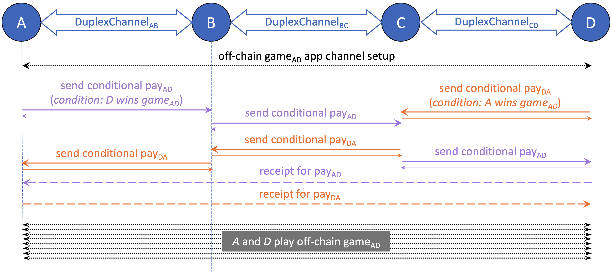
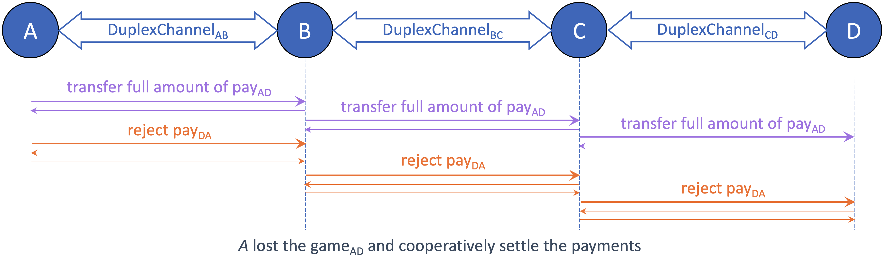
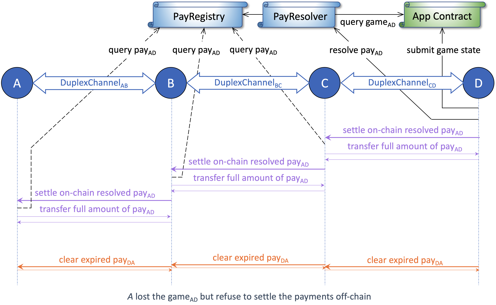

CelerApp Contracts and Protocol¶
As described in the previous sections, CelerPay supports high-throughput multi-hop generic conditional payments, where the conditional dependency is expressed as a very simple API query interface. Different applications, such as off-chain state channel contract, on-chain oracle, on-chain NFT ledger, ENS name ownership, rollup states, can all connect with this conditional dependency interface. In this chapter, we discuss the general interface and specifically the design pattern and interaction flow of generalized state channel applications.
CelerApps are highly interactive, secure, and low-cost decentralized state channel applications that can produce outcomes to serve as CelerPay conditions. CelerApp is designed to be flexible to support arbitrary multi-party state transition logic. Initializing or closing a CelerApp state channel does not require any on-chain transactions if all participants are cooperative. The on-chain dispute process of CelerApps is also optimized for cost-efficiency.
This chapter first describes how to integrate CelerApp with CelerPay to send and settle off-chain conditional payments based on the app state outcomes, then introduces the structure and operations of an efficient CelerApp framework powering the CelerX application platform.
Generalized App Workflow¶
The app state channels share some high-level principles with the payment state channels but also have a significant difference: app channel is decoupled from funding allocation, so that initializing an app channel does not need an upfront token deposit. Therefore, any number of nodes can create and join app channels without on-chain initialization, and can directly communicate with each other to update their co-signed off-chain states without any multi-hop relays.
API Required by CelerPay¶
Any on-chain or off-chain smart contract can become a CelerApp contract by exposing two functions for the CelerPay to use as payment condition: isFinalized returns whether the app state outcome is finalized; getOutcome returns the boolean or numeric outcome of the app.
// required interface for CelerApp with boolean outcome
interface IBooleanOutcome {
function isFinalized(bytes calldata _query) external view returns (bool);
function getOutcome(bytes calldata _query) external view returns (bool);
}
// required interface for CelerApp with numeric outcome
interface INumericOutcome {
function isFinalized(bytes calldata _query) external view returns (bool);
function getOutcome(bytes calldata _query) external view returns (uint);
}
The Solidity interfaces for CelerApp contracts are shown above. Each function takes a single argument in generic bytes format so that arbitrary query logics can be supported. These two state query functions are the only requirements from CelerPay, which cares nothing about how the app states are progressed and resolved.
Note on application Byzantine failures:
A common question on this decoupled architecture is about the security assumption of the applications on which conditional payments depend. How can the allocated fund be secure with such a minimal interface? What happens if the application logic exhibits Byzantine behaviors, e.g., isFinalized returns true and then later flips to false, or getOutcome returns nondeterministic results? As discussed through this documentation site, with careful design of the on-chain contracts and off-chain protocols, CelerPay network puts no assumption on the reliability and security of the CelerApps and thus is resilient to any Byzantine behavior of the applications.
End-to-End Integrated Workflow¶
As described above, it is quite easy to integrate CelerApp with CelerPay so that an app outcome can be associated with any off-chain token transfer. This section uses an example to show the end-to-end integrated workflow. For simplicity, our example assumes two players playing a state-channel-based game with conditional payments to each other depending on who wins the game. More app participants and more complicated numeric payment resolving logic can be supported with a similar workflow, which we omit in this section.
Play the game with conditional payments to the winner¶

Figure above shows the message flow in the games setup and playing phase. A and D are the players of a state-channel-based game. Black lines represent messages related to the off-chain game; purple and orange lines represent the messages related to conditional payments from A and D respectively; dashed lines means the two players directly communicated with each other without the payment relay nodes. The steps are summarized as follows:
- A and D set up up the game app state channel by exchanging some initial parameters, including the basic match information, the winner’s prize, the virtual or deployed game contract address. Neither virtual or deployed game contract requires on-chain initialization of the game channel.
- A and D send conditional payments to each other according to the message flow of conditional payment setup. The payment content is symmetric: “pay the game opponent the winner’s price if the opponent wins.” The routing paths of the two payments can be different. The game can start after both conditional payments are received.
- A and D play the game off-chain by exchanging signed game states until reaching an outcome (either cooperatively or through on-chain settlement).
Note on state progression: The integrated workflow is agnostic to how the states are updated or on-chain settled. We will introduce an efficient framework for game state progression and on-chain settle later. Other types of app channel and state progression protcols can also be fully supported by the integrated workflow.
Settle the payments when the loser is cooperative¶

Figure above shows the message flow of A following the protocol after it lost the game off-chain. The honest and cooperative loser A should initiate the settlement process of both conditional payments: pay the full amount of the conditional payment from A and reject the conditional payment from D. The whole integrated workflow is completed after the winner D confirms the settlement of both conditional payments.
There is zero on-chain transaction during the whole integrated workflow if all participants are cooperative, starting from two players decides to play the game until the winner receives the prize.
Settle the payments when the loser is uncooperative¶

Figure above shows the message flow after A lost the game but did not follow the protocol to settle the conditional payments. In order to receive the prize, the winner D should initiate a dispute process, resolve the payment on-chain, and settle the payment with its upstream peer. There is zero on-chain transaction from the relay nodes B and C even when the players A and D cannot cooperatively finish the game off-chain. The step-by-step workflow is summarized as follows:
- The winner D starts to on-chain dispute the game by submitting the off-chain game state to the on-chain game contract. If the off-chain game is based on a virtual contract, D should first deploy the virtual contract through the VirtContractResolver. Further on-chain game move may be needed if the co-signed off-chain game state cannot result in a finalized outcome.
- D on-chain resolves the conditional payment from A on-chain after the game outcome is finalized. The PayResolver would query the game (condition) outcome from the app contract, then compute and write the payment result into the PayRegistry.
- D and all relay nodes settle the on-chain resolved payment from A with their upstream peers. If any node along the path refuses to cooperative, the downstream peer may choose the settle and close the payment channel with the upstream peer.
- The conditional payment from winner D to loser A should be canceled. If A did not reject the payment sent to itself, all nodes could wait till the payment expires and then clear it. D can also on-chain resolve the payment sent by itself if it wants to clear the payment before it expires.
From the generalized state channel app workflow described in this section, we can conclude two important architectural benefits thanks to the decoupling of payment and app channels:
- The players A and D can use any types of app channel framework for their off-chain games while efficiently associating conditional payments with the game result
- The payment relay nodes B and C just simply forward the payment messages off-chain without the need to know anything about the game between players, so that the network complexity is minimized as it scales out.
An Efficient App Framework¶
As described above, the generalized CelerApp protocol does not have any restriction on the state progression and finalization logic of an app channel. Therefore, various types of app framework can be easily supported. This section presents an example app framework to build efficient turn-based state channel games, which is currently used by the CelerX mobile and web SDK.
The framework implements a simple turn-based app channel workflow:
- Players take turns to make the game moves off-chain by exchanging signed new game states.
- Players can dispute the game by submitting the off-chains states to the on-chain contract.
- Players may have to make moves on-chain to finalize the game state during the dispute.
The rest of this section describes the structure and usage of this app framework in detail. Thanks to the flexibility of CelerPay and CelerApp architecture, the high-level design and each component of this framework can quickly evolve to achieve more features and better performance.
Protobuf Message¶
Same with CelerPay, CelerApp also leverages Protobuf to define blockchain-neutral data structures that can be seamlessly used in the off-chain app interactions and on-chain operations.
message AppState {
// a number that is unique for each app session of the same players
uint64 nonce = 1 [(soltype) = "uint"];
// the app state sequence number
uint64 seq_num = 2 [(soltype) = "uint"];
// the serialized app specific state
bytes state = 3;
// on-chain response (challenge, action) timeout
uint64 timeout = 4 [(soltype) = "uint"];
}
message StateProof {
// serialized AppState
bytes app_state = 1;
// players' signatures of the app_state
repeated bytes sigs = 2;
}
The app players make moves off-chain by sending the StateProof message to each other, and dispute by submitting the co-signed StateProof to the on-chain contracts.
Single and Multi-Session Apps¶
A CelerApp contract can be either a virtual or deployed contract, which is mapped to the single or multi-session app in the framework.
Single-Session App¶
A single-session app is mostly used as a one-time virtual contract for fixed players without initial deployment. The player who wants to bring the off-chain game to on-chain dispute needs first to deploy the contract through the VirtContractResolver.
Each single-session app has a virtual contract address that is computed through the hash of the code, the initial app states (constructor parameters), and a random nonce. Players send payments with conditions based on the virtual contract address (field 4 of the Condition message), and deploy the contract only when an on-chain dispute is needed. The list of players and the nonce should be given as constructor inputs to guarantee the uniqueness of each app session.
Multi-Session App¶
A multi-session app supports multiple groups of players playing games on the same contract. It is usually initially deployed once by the developer and then repeatedly shared by all players. No additional code needs to be deployed when a player wants to dispute on-chain. Multi-session app is more suitable for popular games because the (expensive) contract deployment is a one-time process, while the dispute cost for each player is much lower.
Each game session of a multi-session app has a unique session ID, which is computed as the hash of the nonce and the players’ addresses (in ascending order): session_id = Hash(nonce, players), where both nonce and players are extracted from the co-signed StateProof submitted during the on-chain dispute, so that it is not possible to forge a state to update the session maliciously.
When using a multi-session app, players should send payments with conditions based on the deployed contract address (field 3 of the Condition message) with the session ID encoded in the query arguments (fields 5 and 6 of the Condition message).
Contract Operations¶
Our app framework requires three basic on-chain operations for the app contracts: 1) submit off-chain states to the contract; 2) apply on-chain action; and 3) finalize the outcome after action timeout. The Solidity interfaces for app contracts are shown as follows:
interface ISingleSession {
// submit off-chain state and start to dispute the app on-chain
function intendSettle(bytes calldata _stateProof) external;
// apply an on-chain action to the app
function applyAction(bytes calldata _action) external;
// finalize the app outcome in case of on-chain action timeout
function finalizeOnActionTimeout() external;
// omitted view functions to query various on-chain app states
...
}
interface IMultiSession {
// submit off-chain state and start to dispute the session on-chain
function intendSettle(bytes calldata _stateProof) external;
// apply an on-chain action to a session
function applyAction(bytes32 _session, bytes calldata _action) external;
// finalize the session outcome in case of on-chain action timeout
function finalizeOnActionTimeout(bytes32 _session) external;
// omitted view functions to query various on-chain session states
...
}
Contract Templates¶
Our framework provides templates in Solidity to implement the common on-chain logics for app dispute. Using the contract templates together with the CelerNode SDK that takes care of all the off-chain state channel logics, the CelerApp developers can just focus on the app-specific logic without being hassled by any state-channel-related logics such as signature verification, sequence number tracking, or state machine management.
App contract developers only need to implement the following interfaces abstracted by the contract templates. For detailed usages, please refer to the simplest example contracts and tests.
SingleSessionApp template interface:
/**
* @notice Get the app outcome
* @param _query Query args
* @return True if query satisfied
*/
function getOutcome(bytes memory _query) public view returns (bool);
/**
* @notice Update app state according to an off-chain state proof
* @param _state Signed off-chain app state
* @return True if update succeeds
*/
function updateByState(bytes memory _state) internal returns (bool);
/**
* @notice Update app state according to an on-chain action
* @param _action Action data
* @return True if update succeeds
*/
function updateByAction(bytes memory _action) internal returns (bool);
/**
* @notice Finalize the app outcome in case of on-chain action timeout
*/
function finalizeOnTimeout() internal;
/**
* @notice Get app state associated with the given key
*/
function getState(uint _key) external view returns (bytes memory);
MultiSessionApp template interface:
/**
* @notice Get the app session outcome
* @param _session Session ID
* @param _query Query arg
* @return True if query satisfied
*/
function getOutcome(bytes32 _session, bytes memory _query) internal view returns (bool);
/**
* @notice Update session state according to off-chain state proof
* @param _session Session ID
* @param _state Signed off-chain state
*/
function updateByState(bytes32 _session, bytes memory _state) internal returns (bool);
/**
* @notice Update session state according to an on-chain action
* @param _session Session ID
* @param _action Action data
* @return True if update succeeds
*/
function updateByAction(bytes32 _session, bytes memory _action) internal returns (bool);
/**
* @notice Finalize the session outcome in case of on-chain action timeout
* @param _session Session ID
*/
function finalizeOnTimeout(bytes32 _session) internal;
/**
* @notice Get app session state associated with the given key
*/
function getState(bytes32 _session, uint _key) external view returns (bytes memory);